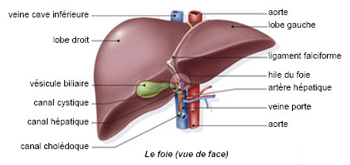

L'insuffisance hepatocellulaire
Definition
L'insuffisance hepatocellulaire est l'arret ou la diminution de la fonction hepatocytaire.
Les hepatocytes synthetisent les facteurs du sang et l'albumine.

Etiologies
- Hepatites.
- Cirrhoses.
- Thromboses des veines sus-hepatiques.
Signes cliniques
Ictere.
Encephalopathie hepatique : ralentissement psycho-moteur et psychique, confusion mentale, coma avec petites crises d'epilepsies.
Signes biologiques
Baisse du taux de prothrombine (inferieur a 70% : risque hemorragique).
Augmentation de la bilirubinemie.
Diminution de l'uree.
Hypoglycemie si le foie ne fonctionne plus.
Hypoalbuminemie.
Voir aussi :
L'appareil digestif
Module Gastro-enterologie